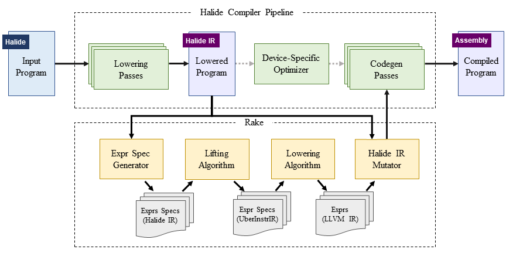

Maaz Bin Safeer Ahmad, Adobe
Alexander J. Root, MIT CSAIL
Andrew Adams, Adobe
Shoaib Kamil, Adobe
Alvin Cheung, UC Berkeley

Instruction selection, whereby input code represented in an intermediate representation is translated into executable instructions from the target platform, is often the most target-dependent component in optimizing compilers. Current approaches include pattern matching, which is brittle and tedious to design, or search-based methods, which are limited by scalability of the search algorithm. In this paper, we propose a new algorithm that first abstracts the target platform instructions into high-level uber-instructions, with each uber-instruction unifying multiple concrete instructions from the target platform. Program synthesis is used to lift input code sequences into semantically equivalent sequences of uber-instructions and then to lower from uber-instructions to machine code. Using 21 real-world benchmarks, we show that our synthesis-based instruction selection algorithm can generate instruction sequences for a hardware target, with the synthesized code performing up to 2.1x faster as compared to code generated by a professionally-developed optimizing compiler for the same platform.
The code for Rake is publicly available here.
@inproceedings{ASPLOS2022:rake, author = {Ahmad, Maaz Bin Safeer and Root, Alexander J. and Adams, Andrew and Kamil, Shoaib and Cheung, Alvin}, title = {Vector Instruction Selection for Digital Signal Processors Using Program Synthesis}, year = {2022}, isbn = {9781450392051}, publisher = {Association for Computing Machinery}, address = {New York, NY, USA}, url = {https://doi.org/10.1145/3503222.3507714}, doi = {10.1145/3503222.3507714}, booktitle = {Proceedings of the 27th ACM International Conference on Architectural Support for Programming Languages and Operating Systems}, pages = {1004-1016}, numpages = {13}, keywords = {program synthesis, compiler optimizations, Instruction selection}, location = {Lausanne, Switzerland}, series = {ASPLOS '22} }
This work is supported in part by the National Science Foundation through grants IIS-1546083, IIS-1955488, IIS-2027575, CCF-1723352, DOE award DE-SC0016260, ARO grant W911NF2110339, and ONR grant N00014-21-1-2724; the Intel-NSF CAPA center, and gifts from Adobe, Facebook, Google, and VMware. We would also like to thank Dillon Sharlet, Rastislav Bodik, Samuel Kaufman, and Krzysztof Drewniak for sharing their valuable feedback and insights during this research.